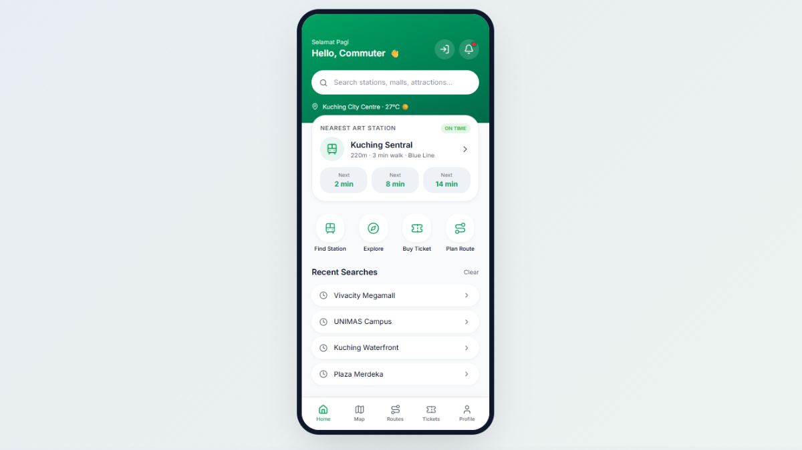

ART Mobile App
A Mobile App Prototype for Autonomous Rapid Transit in Kuching, Sarawak
A mobile application prototype designed for the Autonomous Rapid Transit (ART) system in Kuching, Sarawak. The project focuses on creating a user-friendly interface that helps passengers access public transportation information and improves their overall travel experience.

Project Overview
This project focuses on designing a mobile application prototype for the Autonomous Rapid Transit (ART) system in Kuching, Sarawak. The application aims to make public transportation information more accessible through a convenient mobile interface.
Project Objectives
- Design a user-friendly mobile application for ART passengers.
- Improve accessibility to public transportation information.
- Create a clear and consistent interface for mobile users.
- Enhance the overall user experience through UI/UX design principles.
Design Approach
The application prototype was designed with a focus on usability, visual consistency and straightforward navigation. The design process involved planning the interface layout, organising application sections and refining the user experience through collaborative discussions.
My Contributions
I actively participated in the collaborative design and development of the Aster mobile application prototype. My contributions included:
- Participating in brainstorming and discussing the application concept and design direction.
- Collaborating with team members to plan the user interface and navigation structure.
- Contributing ideas towards the application's layout, visual design and user experience.
- Working together with the team to develop and refine the mobile application prototype using Lovable.
- Participating in reviewing the prototype and improving the overall design.
Through this project, I gained practical experience in UI/UX design, mobile prototyping and collaborative problem-solving.